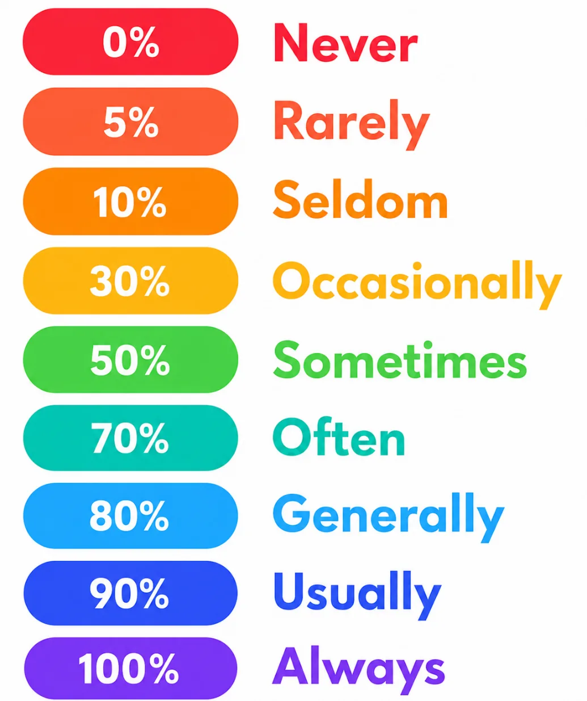
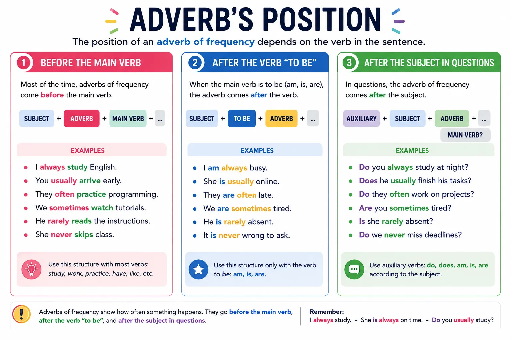
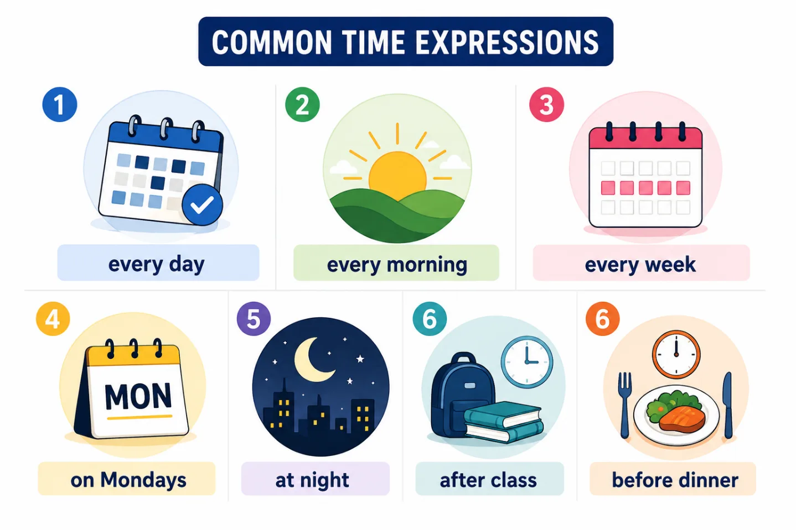
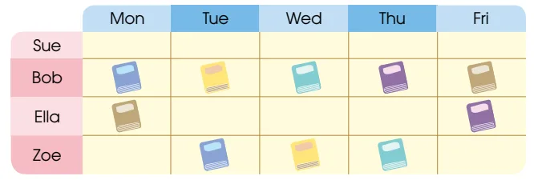
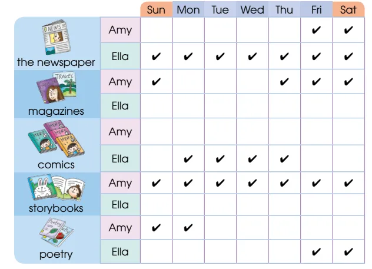

🔁 Always, usually, never: how often do you...?
Todos tenemos hábitos que forman parte de nuestra rutina diaria. Algunas actividades las realizamos todos los días, otras solo algunas veces y otras casi nunca. En inglés, los Adverbs of Frequency nos permiten expresar con qué frecuencia ocurren estas acciones y hacer nuestras ideas más claras y precisas.
En esta guía aprenderás a utilizar los adverbios de frecuencia para describir tus hábitos de estudio, tus rutinas diarias y actividades relacionadas con el programa de Tecnología en Desarrollo de Software. A través de ejemplos, ilustraciones y actividades prácticas, desarrollarás una comunicación más natural y efectiva en inglés.
✨ "Always" is 100%, "never" is 0% — and between them, a whole world of nuance. 🎯

Objetivos de aprendizaje
- 🔁 Al finalizar esta guía, utilizarás los adverbios de frecuencia para describir la recurrencia de tus rutinas, hábitos de estudio y actividades cotidianas, comunicándote de manera clara y precisa en contextos personales, académicos y relacionados con el aprendizaje de tecnología y programación.
🔍 Modo exploración: recorre las 5 estaciones y suma puntos
⭐ Puntos: 0
Actividades
🎮 Modo misión activado — completa las 3 misiones
🏅 Misiones: 0/3
📖 Handy references


📅 Misión 1

Look at the table and fill in the blanks with 'always / often / sometimes / never'.
1. Sue goes to the library on weekdays.
2. Bob goes to the library on weekdays.
3. Ella goes to the library on weekdays.
4. Zoe goes to the library on weekdays.
✍️ Misión 2
Rewrite the sentences by putting the given words in the correct positions.
e.g. I go hiking on Sundays (often) → I often go hiking on Sundays.
📖 Misión 3
Amy is writing about what she and Ella like reading. Look at the table and complete the writing with the given words (always / often / sometimes / never).

Ella and I like reading different kinds of things.
1. I read the newspaper but she reads the newspaper.
2. I read magazines but she reads magazines.
3. I comics but she
4. I but
5. We
Evaluación
Comprueba lo que has aprendido. Selecciona la respuesta correcta para cada pregunta.
Recursos para profundizar
Para ampliar tu conocimiento, te recomendamos explorar los siguientes recursos:
-
Adverbs Of Frequency Game – How Often Do You…? (Games4esl)
Juego de clase para practicar preguntas y respuestas de frecuencia con un dado.
Ir al recurso -
Position of Adverbs of Frequency – Exercise (Englisch-Hilfen)
Ejercicio para practicar la posición correcta de los adverbios de frecuencia en la oración.
Ir al recurso -
Adverbs of Frequency Game (Games to Learn English)
Juego interactivo de gramática que combina el significado y la posición de los adverbios de frecuencia.
Ir al recurso -
Adverbs of Frequency: Darts Game (ESL Kids World)
Juego tipo dardos para repasar vocabulario de adverbios de frecuencia.
Ir al recurso
Bibliografía
https://assets.cambridge.org/9788413220185_excerpt.pdf
https://www.hkep.com/_v3/userfiles/book/sample/9789888294800s.pdf